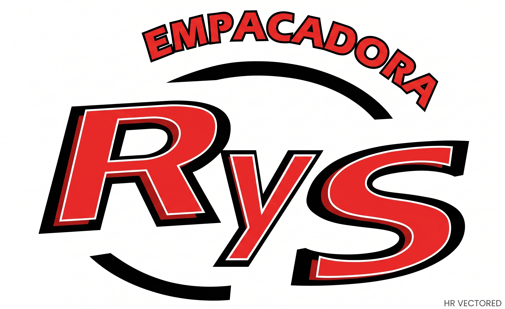
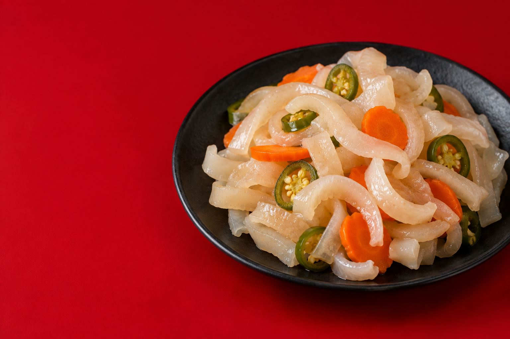

01 / EN VINAGREF
Corte fino
Cuerito en vinagre en corte fino.
Cotizar este producto
Cotiza con RySEL SABOR DE COMPARTIR
Cueritos en vinagre y botaneros.
Encuentra la opción para tu mesa o tu negocio.
FINO · MEDIANO · ENTERO · BOTANERO

NUESTRO CATÁLOGO
Cortes para distintos gustos.
Una presentación botanera para compartir.
Cuerito en vinagre en corte fino.
Cotizar este productoCuerito en vinagre en corte mediano.
Cotizar este productoCuerito en vinagre en corte entero.
Cotizar este productoEn charolas de ½ litro.
Cotizar este productoCONOCE EL PRODUCTO
Piel de cerdo cocida, limpia y encurtida en una mezcla de vinagre, sal y especias. Un producto tradicional mexicano, ideal para botana o acompañamiento.
Piel de cerdo cocida, vinagre blanco, agua, sal, ajo, cebolla y condimentos.
Ingredientes opcionales: zanahoria y chile jalapeño. Consulta los ingredientes específicos de tu presentación en el empaque.
Contiene piel de cerdo. No apto para personas alérgicas a la carne de cerdo.
La ficha del producto indica que puede contener trazas de especias fuertes.
| Componente | Cantidad |
|---|---|
| Energía | 110 kcal |
| Proteína | 16 g |
| Grasa total | 4 g |
| Grasas saturadas | 1.5 g |
| Carbohidratos totales | 1 g |
| Azúcares | 0 g |
| Sodio | 950 mg |
Información proporcionada por Empacadora R Y S. Consulta el etiquetado de tu presentación.
QUIÉNES SOMOS
Somos una empresa mexicana con 15 años de experiencia. Ofrecemos cuerito en vinagre en cortes fino, mediano y entero, además de nuestra línea de cuerito botanero en charolas de medio litro.
Hablemos de tu próximo pedido ↗Somos una empresa dedicada a ofrecer a nuestros clientes productos de la más alta calidad, garantizando frescura, sabor y seguridad alimentaria.
Brindamos a nuestros clientes alimentos tradicionales elaborados bajo procesos higiénicos, eficientes y responsables, contribuyendo al desarrollo de nuestra comunidad y generando bienestar para nuestro equipo de trabajo.
Ser una empresa líder en la producción y empaque de productos cárnicos tradicionales a nivel regional y nacional, reconocida por su calidad, innovación y compromiso con la inocuidad alimentaria.
Buscamos expandir nuestra presencia en nuevos mercados manteniendo la autenticidad de nuestros productos y la confianza de nuestros clientes.
LO QUE NOS GUÍA
Nos comprometemos a ofrecer productos frescos, seguros y de excelente elaboración.
Cumplimos con normas sanitarias, legales y ambientales en cada proceso.
Actuamos con transparencia en nuestras operaciones y relaciones comerciales.
Valoramos la colaboración y el respeto entre todos los miembros de la empresa.
Buscamos mejorar continuamente nuestros procesos y presentación.
Priorizamos la satisfacción del cliente con atención cercana y confiable.
CALIDAD Y CONFIANZA
Empacadora RyS informa que cuenta con certificados TIF de garantía en el producto.
La empresa informa que maneja sellos de la Secretaría de Salud de Nuevo León.
Propuesta para revisión: documentación, vigencia y alcance de certificados y sellos pendientes de incorporar.
HAGAMOS NEGOCIO
Cuéntanos qué producto te interesa,
qué cantidad buscas y dónde lo necesitas.
Para tu mesa, tienda o negocio.
Conversemos sobre lo que necesitas.
Genera un resumen para copiar. El envío directo estará disponible cuando se confirme el contacto comercial.